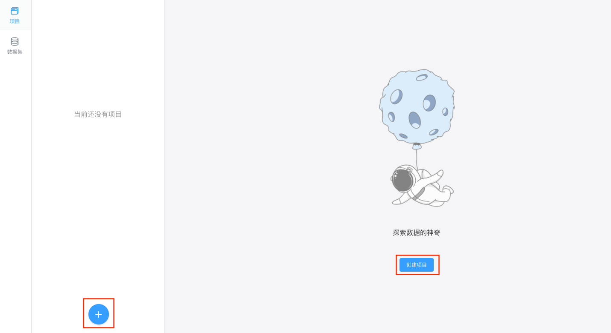
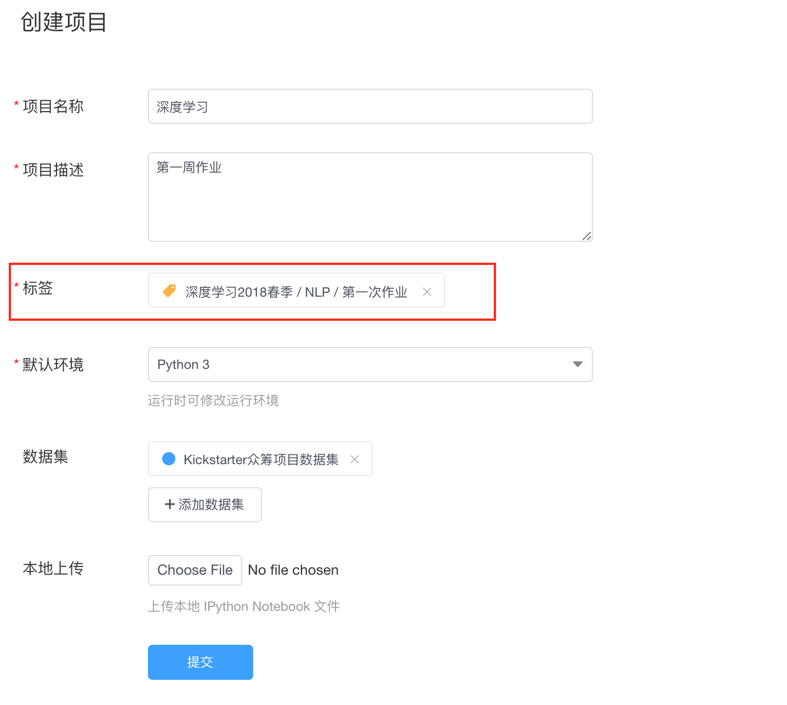
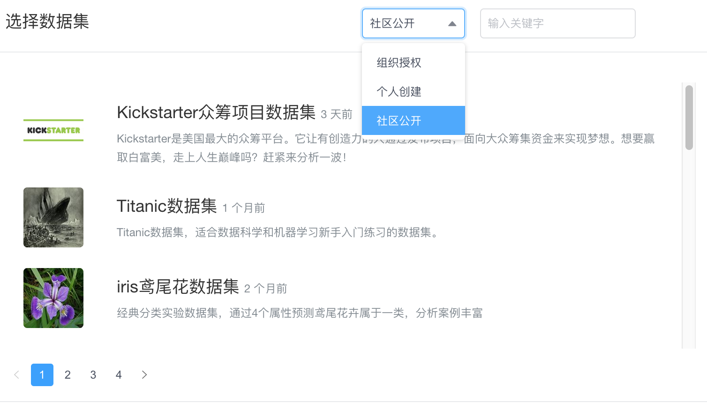

创建项目
在项目中可点击蓝色 + 进行项目的创建。

- 填写项目名称：用户对将要创建项目的命名。
- 填写项目描述：用户对将要创建项目的描述，不超过140字符。
添加标签：用户可以在创建项目时给项目添加标签，将项目归类，便于提交项目后管理员对项目进行筛选及审阅。一个项目只能添加一个标签。详情参见标签管理。 
设置项目环境：用户创建的项目可以选择初始运行环境，K-Lab支持Python 2 & 3 和 R 这三种运行环境。用户也可在项目运行时在kernel菜单栏切换环境。
- 添加项目数据集：用户可以在创建项目时挂载将要使用的数据集。在创建项目之后，如果需要修改数据集，可以在该项目详情页
修改项目属性进行数据集的添加。 在K-Lab组织版里，用户创建项目时可以选择挂载三种不同的数据集：组织授权数据集，个人创建的私有数据和社区公开的数据集资源。一个项目最多挂载三个数据集。挂载的数据集可以在修改项目中进行修改。运行项目时，项目挂载的数据集可以在/home/kesci/input/下找到。  - 上传本地IPython Notebook文件：K-Lab支持原生
.ipynb文件，用户可以直接上传本地的Notebook文件导入K-Lab完成后续编写运行。